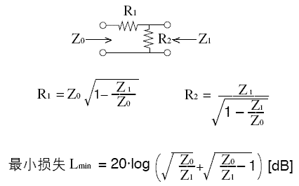

最小損失匹配 (Minimum Loss Matching)
程式編寫日期: 2008年4月8日

程式 (43 bytes，使用記憶A及B)
?→A: ?→B: A√(1 - B÷A◢ B÷√(1 - B÷A◢
A÷B: 20 log( √Ans + √( Ans- 1
例題: 當Zo=500Ω、Z1=200Ω時，求R1、R2及Lmin。
按 Prog 1 再按 500 EXE 200 EXE (顯示R1為387.2983346Ω)
EXE (顯示R2為258.1988897Ω EXE (顯示Lmin為8.961393328)